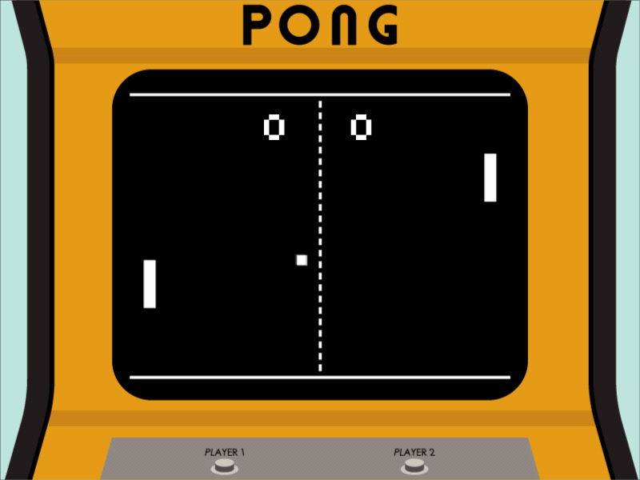

Instrucciones:
¡Bienvenido a Pixel Pong Adventure! Para jugar, utiliza el ratón de la siguiente manera:
- Mueve el ratón hacia arriba para subir la barra rectangular.
- Mueve el ratón hacia abajo para bajar la barra rectangular.
El objetivo es evitar que la pelota pase tu raqueta. ¡Diviértete!
Descripción del Juego:
El juego de Pixel Pong Adventure es un clásico reinventado. Surgió en los años 70 como uno de los primeros videojuegos arcade. Es un juego simple pero adictivo donde los jugadores controlan una raqueta para golpear la pelota y evitar que pase al otro lado.

Manual del Juego:
El proceso del juego es simple:
Para empezar a jugar selecciona la opcion Start y iniciara el juego
La pelota aparecerá en el centro y comenzará a moverse.
Usa el ratón para mover la barreta hacia arriba o hacia abajo y devolver la pelota.
Evita que la pelota pase tu raqueta, de lo contrario, perderás un punto.
El juego continúa hasta que una de las partes no pueda devolver la pelota.
Consejos: La velocidad de la pelota aumentará con el tiempo, por lo que deberás mantenerte enfocado y reaccionar rápidamente para ganar.
¿Listo para Jugar?
¡Juega Ahora!Encuesta:
Nos importa tu opinión. Te invitamos a participar en nuestra encuesta para ayudarnos a mejorar la experiencia del juego.
¡Participa en la Encuesta!